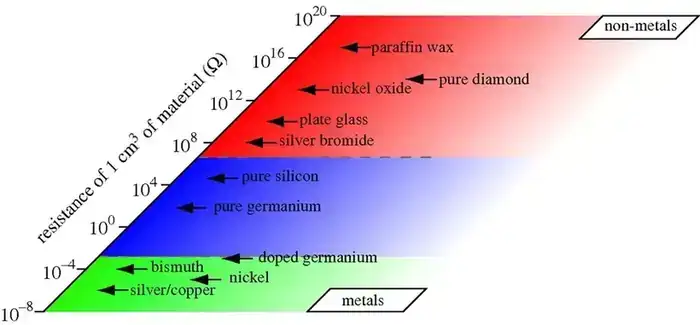

What superconductivity is
Below a critical temperature, some materials carry current with exactly zero resistance and expel magnetic fields. The effect has been known since 1911, explained by BCS theory in 1957, and used commercially for decades — MRI magnets, maglev, particle-accelerator magnets.
Maps, diagrams and images


The problem is temperature. Conventional superconductors need cryogenic cooling; the cuprates, discovered in 1986, work at up to about 130 K under ambient pressure, still far below a room at 293 K. Hydrides under extreme pressure have reached higher temperatures, but only inside a diamond anvil.
The two famous failures
LK-99 (2023). A Korean team posted preprints claiming a lead-apatite compound superconducts at ambient pressure and temperature. Within weeks, labs worldwide had reproduced the material and found no superconductivity; the resistance drop was traced to a copper-sulfide impurity, and the magnetic 'levitation' to ordinary diamagnetism. The claim collapsed in under a month.
The Dias retractions. Ranga Dias's high-pressure hydride results were retracted by Nature in 2023 after concerns about data handling; the University of Rochester later concluded misconduct. That case damaged trust in the whole high-pressure field, which had produced genuinely reproducible results in the same period.
Reproduction is the test, not the press conference. In both cases the material was easy to make, and that is what killed the claims: hundreds of groups tried, and the effect was not there.
The mechanism was the tell. LK-99's proposed mechanism required a structural distortion that first-principles calculations did not support. When the theory is hand-waved and the data are noisy, the field now knows to wait.
The real frontier is different. Cuprates, iron-based superconductors, nickelates and hydrides under pressure are all live research areas with published, replicated results. None of them is room-temperature at ambient pressure, and the honest answer to 'when?' is that nobody knows.
What to watch
A genuine claim will look different: a material that several independent groups can synthesise, with resistance measured four ways, magnetic susceptibility consistent with perfect diamagnetism, and a specific heat anomaly at the transition. Any of those alone can be mimicked by artefacts.
The archive labels this 'live debate' because superconductivity is real and the search is active — not because the room-temperature claims are credible. They are not.
Sources for this page
- Wikipedia, “Superconductivity” — history, theory, recordsen.wikipedia.org
- Nature news, the LK-99 replication failures (2023)www.nature.com
- Nature, retraction of the Dias hydride papers (2023)www.nature.com
- U.S. DOE, applications of superconductivitywww.energy.gov
Open resources on this topic
- BookModification of a charged-Bose-gas model for observed room-temperature superconductivity in narrow channels th — D. M. Eagles · 2011 (Internet Archive, free to read)
- BookSuperlight small bipolarons: a route to room temperature superconductivity — A. S. Alexandrov · 2007 (Internet Archive, free to read)
- BookIs room-temperature superconductivity with phonons possible? — ['M. de Llano', 'M. Grether'] · 2007 (Internet Archive, free to read)
- PapersOpen-access articles: DOAJ · PubMed Central · Internet Archive Scholar
- BooksPublic-domain and borrowable copies: Open Library · Project Gutenberg · Google Books
Cite this page
Momin, S. (2026). Room-Temperature Superconductivity. The Larger World Archive. https://drsamonline.github.io/LARGE_GLOBE/superconductivity.htmlMomin, Sohil. “Room-Temperature Superconductivity.” The Larger World Archive, 2026, https://drsamonline.github.io/LARGE_GLOBE/superconductivity.html.Momin, Sohil. “Room-Temperature Superconductivity.” The Larger World Archive, 2026. https://drsamonline.github.io/LARGE_GLOBE/superconductivity.html.@misc{roomtemperature2026superconductivity,
author = {Momin, Sohil},
title = {Room-Temperature Superconductivity},
year = {2026},
howpublished = {The Larger World Archive},
url = {https://drsamonline.github.io/LARGE_GLOBE/superconductivity.html},
note = {Last reviewed 20 November 2026}
}Last reviewed 20 November 2026 · Corrections policy · this page is not peer reviewed